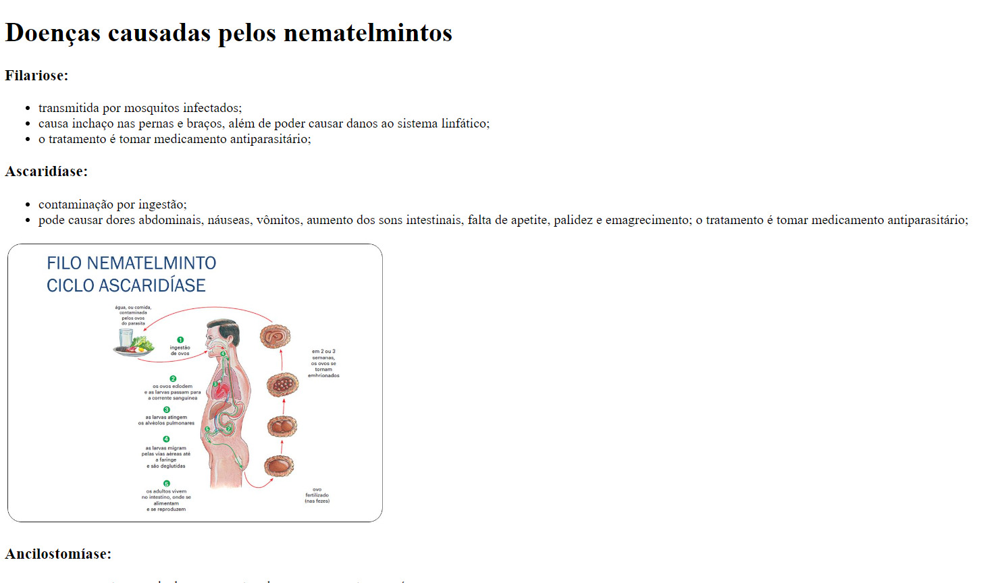
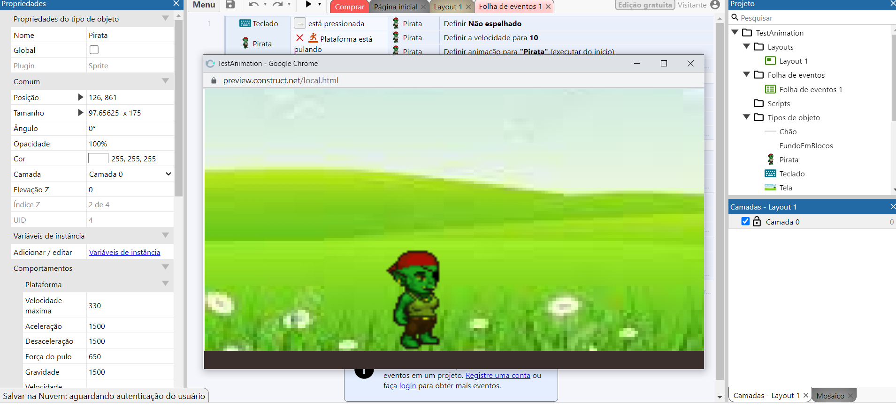

Aqui apresento alguns projetos simples que fiz com meus colegas para traballhos escolares:
A imagem mostra a tela de um site sobre nemaltelmintos no qual tivemos que produzir, nesse projeto o objetivo era juntar os conhecimentos da matéria eletiva de html e a matéria de biologia.

A imagem a seguir mostra a tela de um mini jogo feito no construct, no qual também foi produzido para uma eletiva na qual participei.

Esse é o projeto mais completo que consegui produzir, o jogo chamado Gota Serena,
o objetivo do jogo basicamente consistia em fazer que as gotas de água atingissem as nuvens para trazer chuva no sertão.